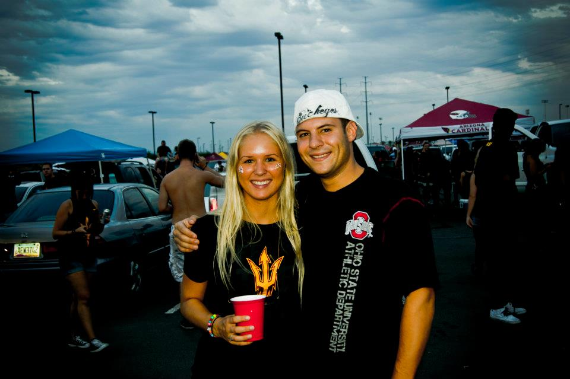

Jeg heter Nina
Akkurat blitt 29 år
Født og oppvokst i Oslo (Mortensrud / Nordstrand)
Bor på Sagene med samboer (Morten)
Har en bachelor i Interiørdesign fra Arizona State University (nope, ikke Morten på bildet)

Jobbet de siste 5 årene, hvor de siste 3 1/2 i Varner med bla brukervennlighet i fysisk butikk
Kan ikke se for meg et liv uten pommes frites, havet, smeltet ost, guacemole, Ganni, musikk, pizza, planter og vin (og Morten da)
Synes Jamaica og Italia er de fineste landene (jeg har vært i) i hele verden, og italiensk og meksikansk mat er det aller beste jeg kan få servert
Lærer spansk og italiensk på fritiden

Design & arkitektur
Teknologi, YouTube & Ted Talks
Mat (både lage og spise) & vin (helst bare drikke)
Bøker og blader og sying
Musikk (hører på nesten alt)
Trening (løping, styrke, klatring og vannski (og litt yoga))
Venner & familie

Jeg er veldig fascinert av alt teknologien kan (og får til). Interaksjonen mellom mennesker og teknologi er fremtiden, og veldig spennende,
og jeg gleder meg til å være med å skape gode brukeropplevelser og kanskje være med å forme fremtiden litt..?
Jeg synes miksen mellom design, tech, analyse og psykologi er dritspennende og jeg gleder meg til å lære mer om det og jobber mer med det!
Heia tech (og damer i tech) og fremtiden og for at vi skal bli en del av den!